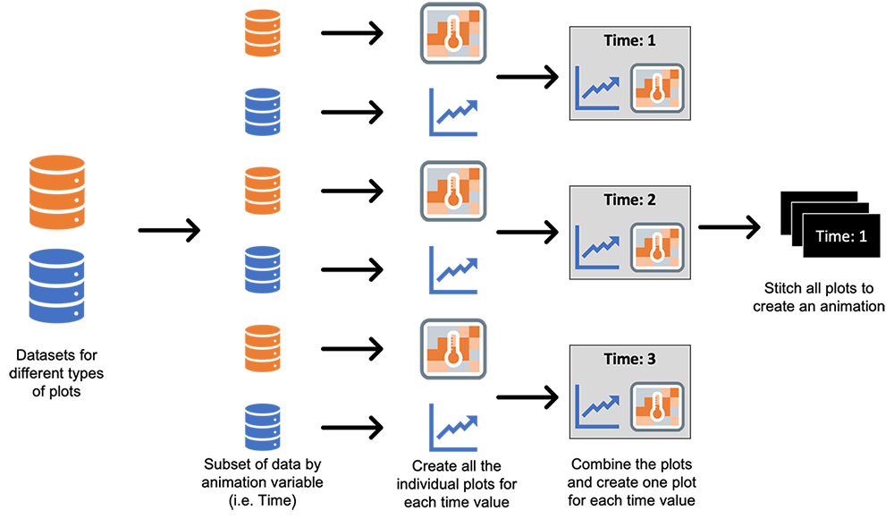

Animate any plots in R using gifski
In this article, we will see how we can animate any plots in R. If you are looking to animate a simple plot (like barplot, line plot, etc.), then you can simply use libraries like gganimate or plotly. This gives many interesting features like adding shadows or creating a trail. But if you want to make a more custom animation involving any number and any kind of plots, you can use libraries like gifski to create a gif animation. One advantage of using gifski is that the color is not limited to 256.
To create the animation, it is not necessary to move a plot. But here we will simply make many individual plots and stitch them together as movie frames. Each frame is a different plot that is made using a subset of the full data. 
Here, we will try to create an animation of two plots which I used in one article on modeling COVID-19 using the SIR model. First, let's look at our data. The data for creating the line plots has three columns which have the count of individuals in the three states - S, I, and R for all the days (the Day column will be used to animate).
| Day | State | Count |
|---|---|---|
| 1 | S | 19760 |
| 1 | I | 223 |
| 1 | R | 17 |
| 2 | S | 19715 |
| 2 | I | 249 |
| ... | ... | ... |
| X | Y | infection | Day |
|---|---|---|---|
| 1 | 1 | 0.7885 | 1 |
| 2 | 1 | 0.7837 | 1 |
| 3 | 1 | 0.7969 | 1 |
| ... | ... | ... | ... |
Now we can move the plot generation. As the next step, we will create the plots for day 1. Since we need to create plots multiple times, let's define a function for that.
# LOADING THE LIBRARIES ----------------------------------------
library(ggplot2) # for plots
library(gridExtra) # to create a layout and combine the plots
library(stringr) # for str_pad function to pad while writing filenames
# FUNCTION TO CREATE THE PLOTS ----------------------------------------
# Description: this function creates a line plot and a heat map for a given day
# INPUT:
# ______
# sir: dataset having the count of individuals in each state for each day
# heat_: dataset for the heatmap
# ti: day
# OUTPUT:
# _______
# a plot having both the line plot and heatmap
GeneratePlots <- function(sir, heat_, ti) {
# Filtering the data for given day
sir2 <- sir[sir$Day <= ti, ]
# creating the line plot
lineplot <- ggplot(data=sir2, aes(x=Day, y=Count, group=State, color=State)) +
geom_line() +
theme_minimal() +
scale_color_manual(breaks = c("S", "I", "R"),
values=c("blue", "red", "green4"))+
theme(plot.title = element_text(hjust = 0.5, size = 10),
axis.title = element_text(size = 8))+
labs(title = "SIR plot") +
xlim(1, tot_time) +ylim(0, 20000)
# creating the heatmap
heatplot <- ggplot(heat_[heat_$Day == ti, ], aes(X, Y, fill= infection)) +
geom_tile(color = "gray") +
# defining the legend bar (setting the limit from 0 to 1 as this is a ratio)
scale_fill_gradient2(low="white", high="red", breaks=seq(0,1,0.25), limits=c(0, 1)) +
theme_minimal() +
# Plot title
labs(title="Spread of infection across communities")+
# Theme and layout of the plot
theme(axis.text.x=element_blank(),
axis.text.y=element_blank(),
axis.title.x=element_blank(),
axis.title.y=element_blank(),
panel.grid.major=element_blank(),
plot.title = element_text(hjust = 0.5, size = 10))
return(grid.arrange(lineplot, heatplot, nrow = 1, top = paste0("Day: ", ti)))
}
Calling the above function for day 100 gives the following output plot:
GeneratePlots(sir, heat_, 100)
Now the only thing left is to call the function GeneratePlots in a loop, save the plots as .png files and convert them into .gif animation. While saving the plot we have to make sure that the file name should be in proper order. Here, I am padding the day with 0 to ensure that.
for (i in 1:200) {
# creating the plot
p <- GeneratePlots(sir, heat_, i)
# saving the plot locally using ggsave function
ggsave(paste0("ComPlaceOnly_", str_pad(i, 3, pad = "0"), ".png"), p, width = 3,
height = 1.2, scale = 2, dpi = 150)
}
The only step left is to read all these files and stitch them together to create an animation.
library(gifski)
# creating a vector of png file names
png_files <- list.files("png_files_location", pattern = "*.png", full.names = T)
# creating a gif using all the png files
gifski(png_files, gif_file = "animation_ComPlaceOnly.gif", width = 800, height = 350, delay = 0.2)
Following the above steps, we will have the below animation showing how the values change over time for both the line plot and heatmap.

Wrapping Up
Now you know how to create any plots in any layout into animation and show how the values change over time. In this article, I have used ggplot, but the same approach of creating .png and .gif files can be followed for any plotting libraries.